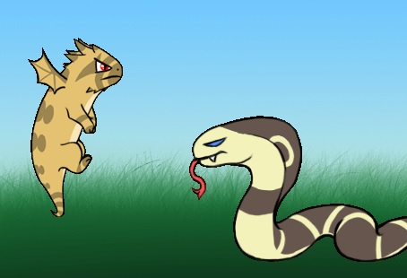

Aubrey's Game!
This assignment was to create a program using prior information
learned in class and also with new information regarding the subject
chosen.
I decided to create a game about a horned toad who grew
wings and decided to defeat his natural enemies.

The most difficult part of this project was figuring out how to
insert images into the program. After scowering the internet, we
finally found the code to do so.

The link to my repository can be found